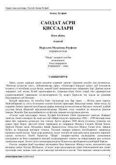

SAPayg'ambar hayoti va Islom tarixini badiiy tarzda yorituvchi asarning to'rtinchi qismi.
Bu kitob Ahmad Lutfiy Qozonchining oltijildlik 'Saodat asri qissalari' asarining to'rtinchi qismi bo'lib, 'Buyuk fath' deb nomlanadi. Asarda Payg'ambarimiz Muhammad (s.a.v.) hayoti va Islom tarixi badiiy uslubda tasvirlanadi. Kitob Nurullo Muhammad Raufxon tahriri ostida 'Sharq' nashriyoti tomonidan 2006-yilda Toshkentda chop etilgan.